Coursework. CMD728 Generative AI, in-class breakout activity, 9 November 2026. Task: design an around-the-island bike tour — define the constraints, work out a trip plan, estimate the budget per person, and create a pre-trip booklet. Made with generative AI as a collaborator. Prices and facts were checked against the sources in Section 12.
One causeway road links four islands at the south end of the Maldives. In 6 days and 5 nights, you ride it on your own: Gan, Feydhoo, Maradhoo and Hithadhoo.
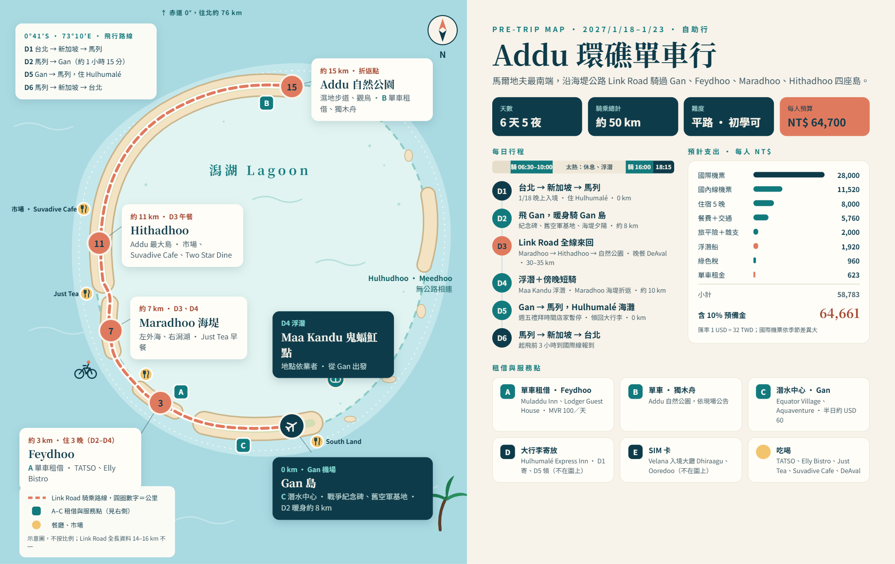
The Maldives has 1,192 coral islands. Most islands are only a few hundred metres long. You can ride around one in less than ten minutes. They are too small for a bike tour.
Addu Atoll, in the far south, is different. Britain used Gan as an air base in the Second World War. Later, a causeway road, the Link Road, joined Gan, Feydhoo, Maradhoo and Hithadhoo. The road is about 14–16 km long. It is one of the longest roads in the Maldives.
In this plan, "around the island" means this: you follow the curve of the atoll from Gan in the south to Hithadhoo in the north. Then you ride back.
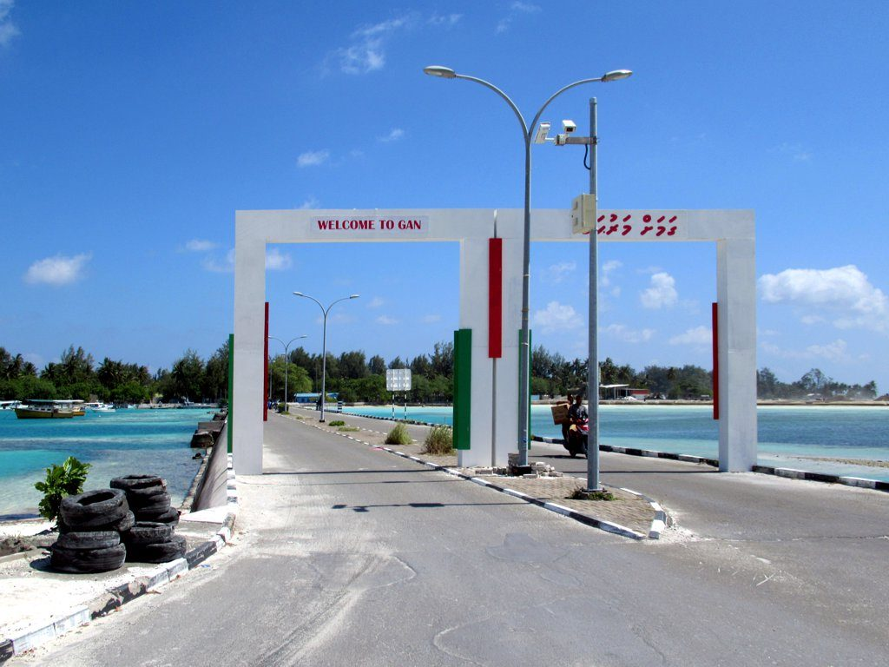
Diagram, not to scale. Distances between islands are estimates. Sources give different lengths for the Link Road (14–16 km). Use the real distance on site.
The sun near the equator is strong. Divide each day into three parts: ride early, stay inside at midday, ride late. Sunset is at about 18:15. Be back at the guesthouse before dark.
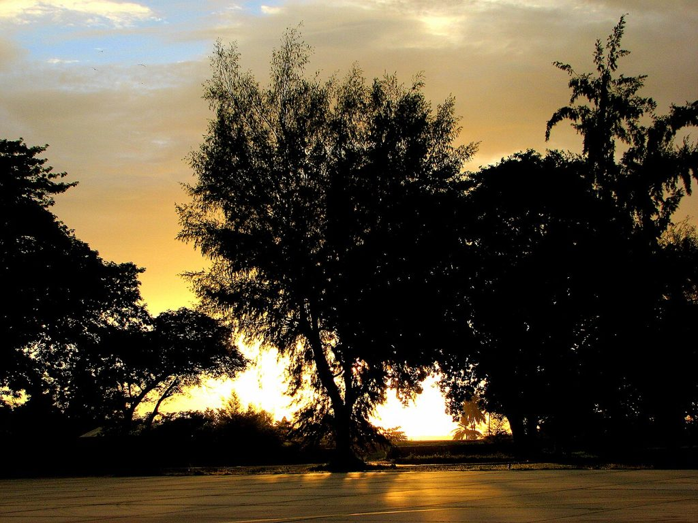
Flight times are sample assumptions. When you book, put the real times here and adjust the plan. Orange time = riding.
| 06:30 | Check in at Taoyuan Airport. | Keep these on your phone: IMUGA QR code, guesthouse booking, return ticket. |
| Morning | Fly to Singapore (about 4.5 h). | Keep at least 2 h for the connection. |
| Afternoon | Fly Singapore → Malé (about 4.5 h). | Malé is 3 h behind Taiwan. Set your watch. |
| Evening | Arrive at Velana Airport. Go through immigration. | Show your passport, IMUGA, hotel booking and return ticket. |
| +30 min | Buy a local SIM card at the airport. | Telecom desks are in the arrival hall (Dhiraagu, Ooredoo). |
| +60 min | Check in at the Hulhumalé guesthouse. | Taxi: about MVR 80–85, cash only. Bus: about MVR 10–20, every 30 min. Use the free pickup if the guesthouse has one. |
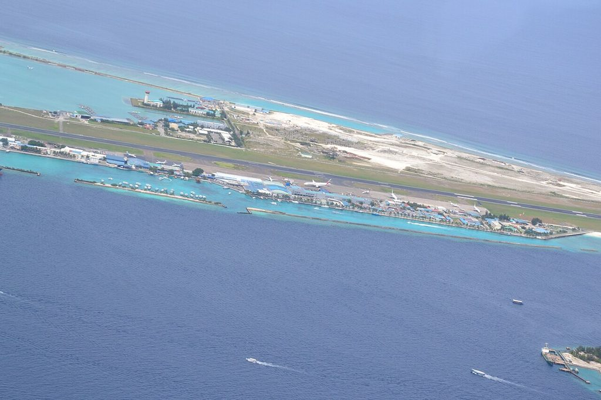
| 05:30 | Get up. Check out. Leave the large suitcase at the front desk and get a receipt. | Take only the small bag to Addu. Ask for a breakfast box, or buy food at the airport. |
| 06:00 | Go to the Velana domestic terminal. | Guesthouse transfer or taxi. |
| 07:30 | Fly Malé → Gan (about 1 h 15 min). | The domestic bag limit is lower. Check the kg limit when you book. |
| 09:00 | Arrive at Gan Airport. | Guesthouse pickup to Feydhoo (about 3 km). |
| 09:30 | Leave your bag. Get the bike. Do a test ride. | Check the brakes, tyres, seat height, lights and lock. Photograph the bike. |
| 10:30 | Have a drink. Rest. | Kalhibih Drinks in Feydhoo. |
| 12:00 | Lunch. | TATSO Restaurant in Feydhoo. |
| 13:00 | Check in. Sleep. | Stay out of the midday sun. |
| 16:00 | Ride around Gan: British War Memorial → old RAF base buildings → Equator Village area. | Feydhoo → Gan is about 3 km. The road is flat. |
| 17:45 | Watch the sunset from the causeway. | Sunset is at about 18:15. |
| 18:30 | Ride back to the guesthouse. | Arrive before dark. |
| 19:00 | Dinner. | Elly Bistro in Feydhoo, or near the guesthouse. |
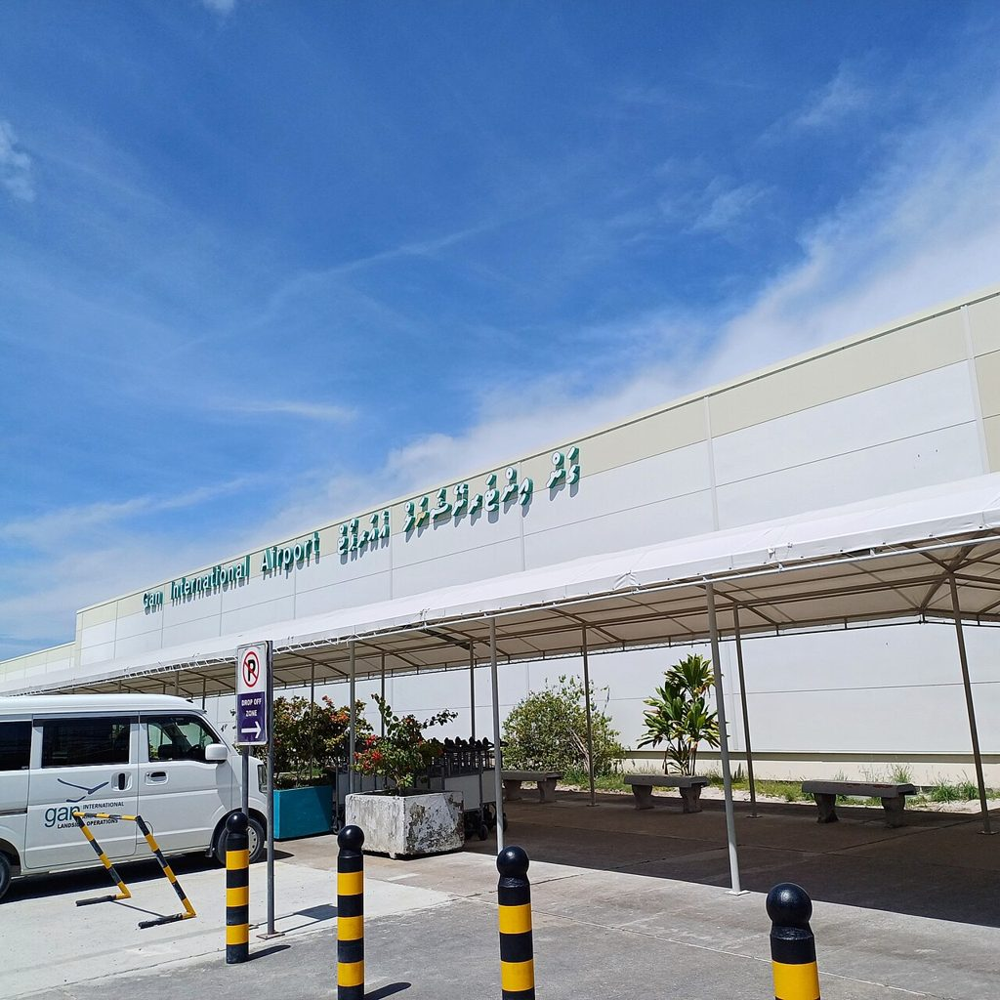
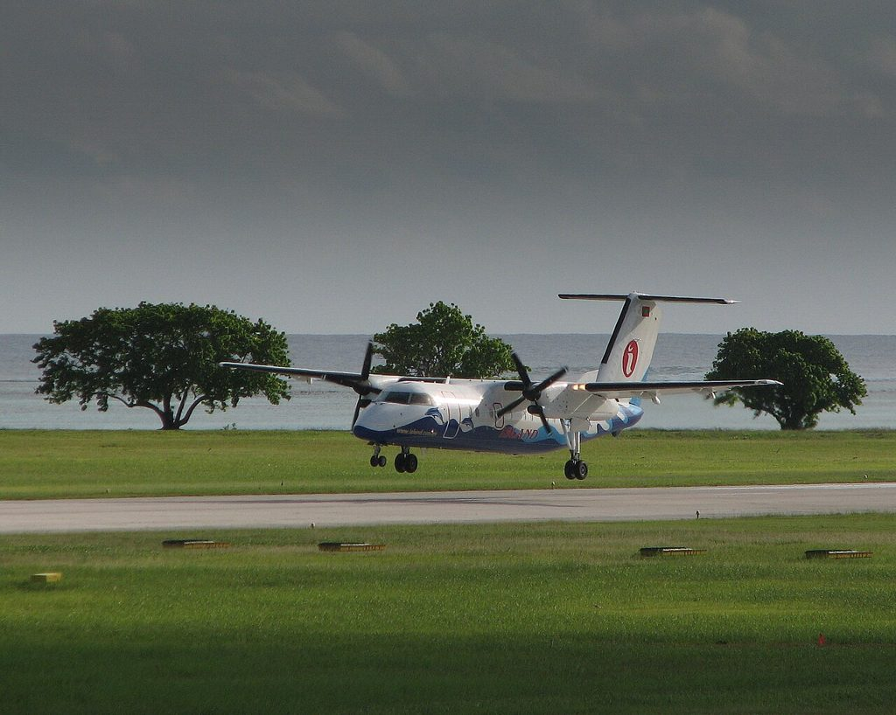
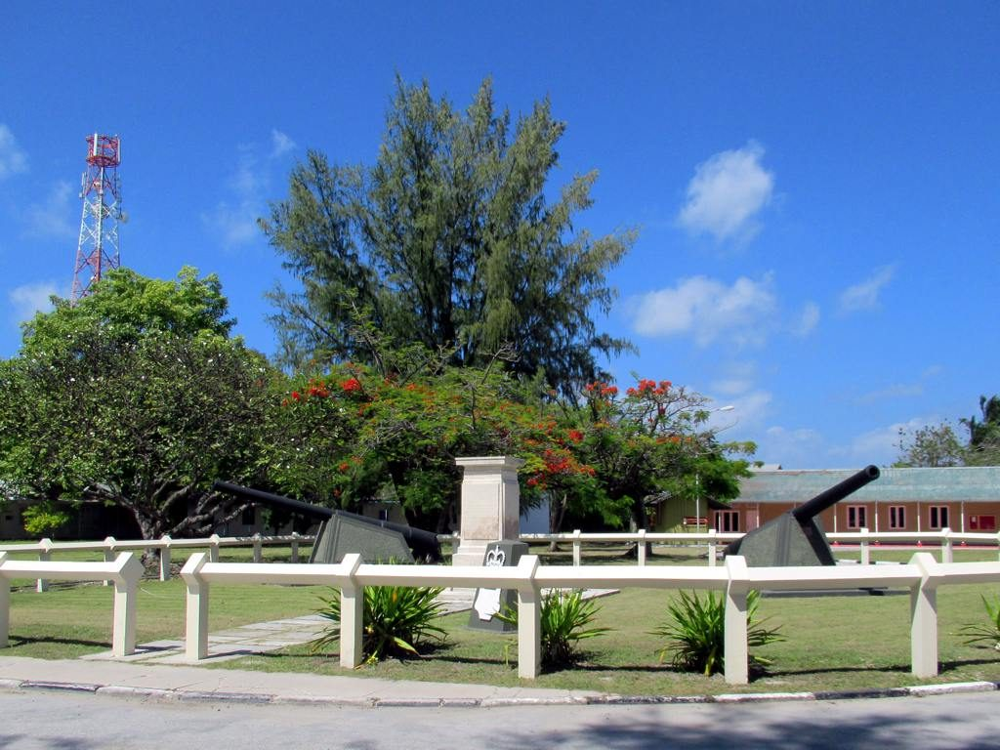
| 05:45 | Get up. Put on sunscreen. Fill 1.5 L of water. | Take MVR cash, a charged phone and a power bank. |
| 06:30 | Ride north from Feydhoo. | Keep left. Ride in single file. |
| 07:00 | Cross the Maradhoo causeway. | Open sea on the left, lagoon on the right. Stop for photos. |
| 07:45 | Breakfast: local tea and snacks. | Just Tea, on the main road (no English sign). |
| 08:30 | Enter Hithadhoo. Ride north on the main road. | Hithadhoo is the largest island. Watch for motorbikes. |
| 09:15 | Addu Nature Park: wetland trail, birds, coast. | This is the turn-back point. Read the notices before you rent a kayak. |
| 10:30 | See the Medhe Miskih old mosque cemetery. | Look from outside. Ask local people before you go in. Cover shoulders and knees. Be quiet. |
| 11:00 | Visit the Hithadhoo market. | Fresh fish and local produce on weekday mornings. |
| 11:45 | Lunch. | Suvadive Cafe or Two Star Dine. Small shops often take cash only. |
| 12:30 | Stay indoors: café, supermarket, buy water. | Do not ride at midday. |
| 16:00 | Ride south on the same road. | About 15 km. About 1 h 15 min. |
| 17:30 | Arrive in Feydhoo. | If you have energy, ride to the Gan causeway for the sunset. |
| 19:00 | Dinner. | DeAval (Indian food, thali set). |
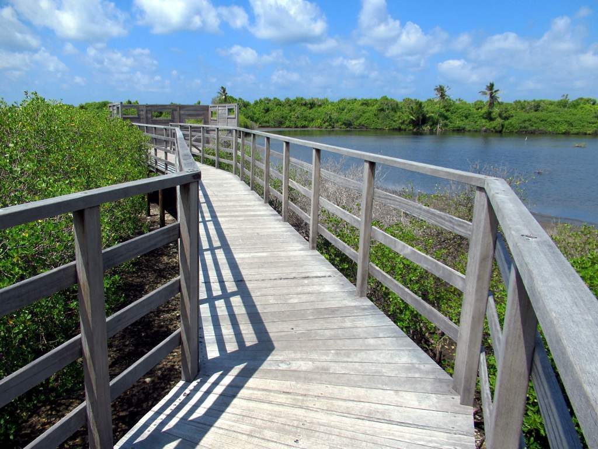
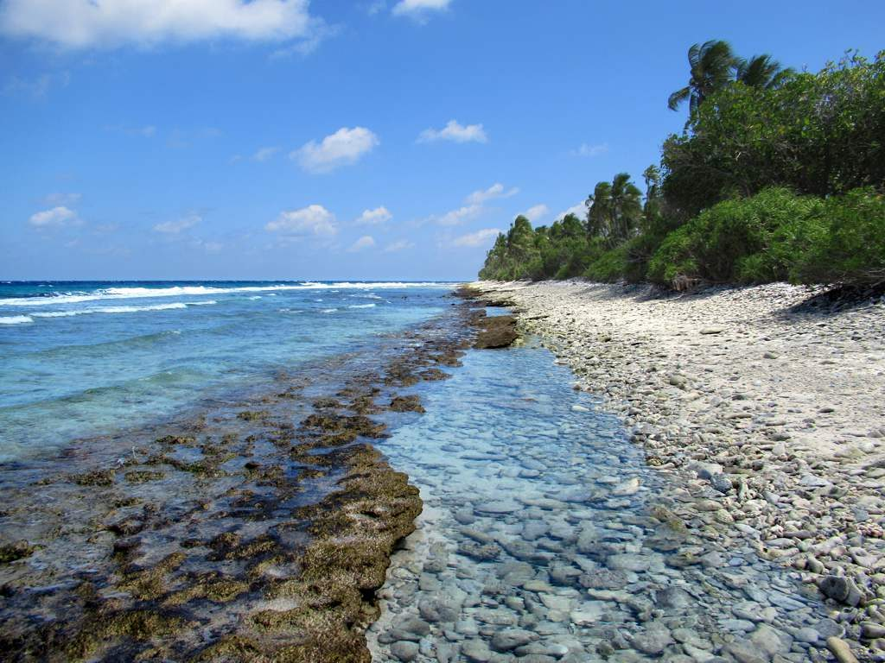
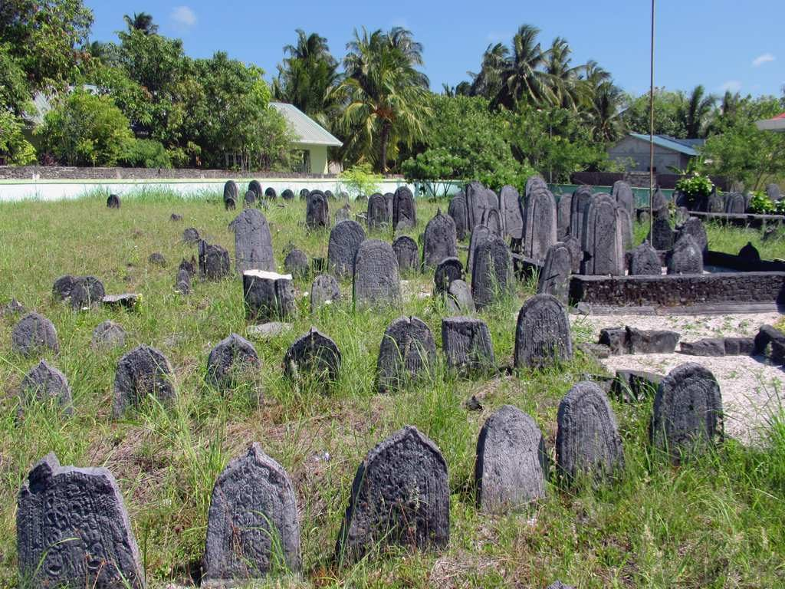
| 07:30 | Breakfast. | At the guesthouse. |
| 08:30 | Meet at the dive centre. | For example, Equator Village or Aquaventure in Gan. Book at least one day before. |
| 09:00 | Go out on the snorkel boat. | Maa Kandu manta point: with the correct tide, snorkelers can see mantas. The current is strong. Wear a life vest. Stay near the guide. |
| 12:00 | Return to the harbour. | The British Loyalty wreck is 33 m deep. It is a dive site. Snorkelers cannot see it. |
| 12:30 | Lunch. | Gan or Feydhoo. |
| 13:30 | Rest. Wash clothes. Pack. | You fly tomorrow. Separate checked and cabin items. |
| 16:30 | Short ride: Feydhoo → Maradhoo causeway and back. | About 10 km. Find your favourite photo spot. |
| 18:00 | Return the bike. Pay the rent. | Compare the bike with your Day 2 photos. |
| 19:00 | Dinner. | Last night in Addu. Go back to your favourite place. |
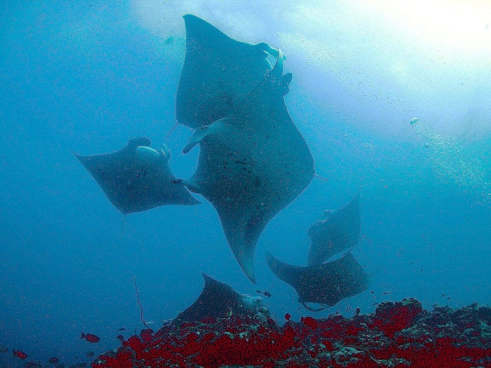
| 08:00 | Breakfast. Check out. | Pay the room and the green tax. |
| 09:30 | Guesthouse transfer to Gan Airport. | Arrive 1.5 h before a domestic flight. |
| 11:00 | Fly Gan → Malé (about 1 h 15 min). | Eat brunch at South Land Restaurant in Gan Airport before the flight. |
| 12:30 | Go to the Hulhumalé guesthouse. Collect the large suitcase. | Today is Friday. Many shops close for prayers around midday. |
| 14:30 | Lunch. | Shops open again after prayer time. |
| 16:00 | Walk and swim at Hulhumalé beach. | Cover shoulders and knees. Wear a bikini only in the marked area. |
| 18:00 | Watch the last sunset. | |
| 19:00 | Dinner. Buy gifts. | Local tuna products are a common gift. |
| 21:00 | Pack. | Ask the guesthouse for the airport transfer time. Since August 2024, you do not fill in IMUGA when you leave. |
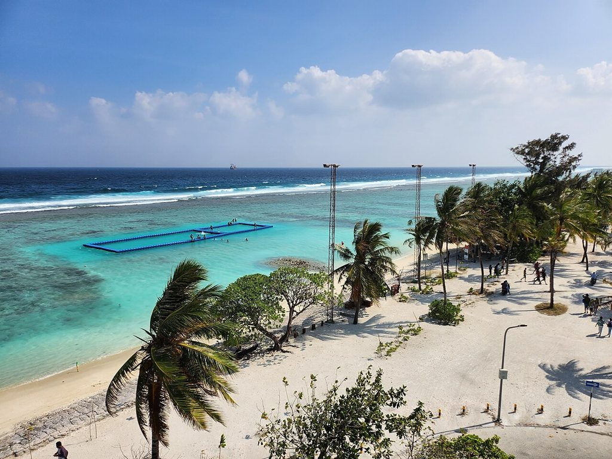
| Dep −3 h | Check in at the Velana international terminal. | Taxi about MVR 80–85, or guesthouse transfer. Spend your last MVR at the airport. |
| Day | Fly Malé → Singapore → Taipei. | Arrival time depends on the real flight. It can be late at night. |
Rule: stay in only two places. Do not change guesthouses every day. Leave your bags at the guesthouse and ride light. Two people share one room and split the price.
| Night | Place | Why here | Example (compare prices before you book) |
|---|---|---|---|
| Day 1 | Hulhumalé | Island next to the airport. Short drive after a late arrival. | Express Inn (lists free airport pickup) |
| Days 2–4 3 nights | Feydhoo | On the south part of the Link Road, about 3 km from Gan Airport. Easy to ride north or visit Gan. | Muladdu Inn (bike rental, airport transfer); Lodger Guest House (bikes available) |
| Day 5 | Hulhumalé | You fly home the next day. Use the Day 1 guesthouse. Leave unused bags there on Day 1. | Same as Day 1 |
Why not a resort: the resort green tax is USD 12 per night, two times the guesthouse rate. Room prices are much higher. Resorts are on separate small islands, so you cannot ride out. A Hithadhoo guesthouse (for example, Rekidhiye Inn) also works. It is farther from Gan Airport, so ride Day 3 from north to south.
Rule: the large suitcase stays in Hulhumalé. A small bag goes to Addu. You carry only a daypack when you ride. For this, book the same guesthouse for Day 1 and Day 5.
| Item | What goes in it | Where it goes |
|---|---|---|
| Large suitcase | Clothes for the trip home, space for gifts, items you do not need in Addu. | Leave it at the Hulhumalé guesthouse on Day 1. Collect it on Day 5. |
| Small bag (1 per person) | Clothes for 4 days, swimwear, sunscreen, toiletries, chargers, helmet, bike lights. | Checked bag on the domestic flight. Keep it at the Feydhoo guesthouse. |
| Daypack | Passport, cash, phone, power bank, 1.5 L water, sunscreen, rain poncho, waterproof phone pouch. | Cabin bag on the domestic flight. Carry it when you ride. |
| Item | How we calculate it | NT$ | Basis |
|---|---|---|---|
| International flight | Taipei ⇄ Malé, economy, one stop | 28,000 | Estimate |
| Domestic flight | Malé ⇄ Gan return, USD 360 | 11,520 | Price check |
| Guesthouses | 5 nights × USD 50 (shared room, tax included, per person) | 8,000 | Price check |
| Green tax | Guesthouse USD 6 × 5 nights | 960 | Official |
| Bike rent | MVR 100 × 3 days | 623 | Price check |
| Snorkel boat | Half day, USD 60 | 1,920 | Estimate |
| Food + local transport | USD 30 × 6 days | 5,760 | Estimate |
| Insurance + other | Fixed amount | 2,000 | Estimate |
| Subtotal | 58,783 | ||
| With 10% reserve | Subtotal × 1.1 | 64,661 |
Exchange rates: 1 USD = 32 TWD; 1 USD = 15.42 MVR. International fares change a lot by season. Check again before you book. Ask the dive centre for the snorkel price.
+960 is the country code of the Maldives. We checked these details on 9 Nov 2026. Before you book, confirm again by e-mail or WhatsApp.
| Who | What for | Contact | Checked against |
|---|---|---|---|
| Muladdu Inn guesthouse, Feydhoo | Days 2–4 stay, bikes, airport pickup | +960 777 7288 bookings@muladdu.com The website muladdu.com did not open when we checked. | Tourism Ministry register; aMaldives |
| Lodger Guest House Maradhoo-Feydhoo | Second choice stay, bikes | +960 761 6905 +960 689 1779 | Tourism Ministry register; Trip.com |
| Express Inn guesthouse, Hulhumalé | Days 1 and 5 stay, pickup, bag storage | +960 335 4044 | Momondo; Wotif |
| Aquaventure Dive Center Maradhoo | Day 4 snorkel price, manta point | +960 797 4310 (WhatsApp) info@aquaventure-maldives.com aquaventure-maldives.com | Official FAQ; PADI |
| Diverland Gan, in Equator Village | Day 4 second choice | +960 777 1157 Old data. Confirm first. | Dive Planner Pro |
| Maldivian domestic airline | Book or change Malé ⇄ Gan | maldivian.aero In-country line 1671 cc@iasl.aero | Official FAQ |
| IMUGA arrival declaration | Within 96 h before arrival | imuga.immigration.gov.mv Free. Beware of fake paid sites. | Immigration warning about fake sites |
| Addu Nature Park | Opening hours, trails, kayaks | Visit Maldives official page No official phone found. | Maldives tourism board |
| Taiwan MOFA | Emergency for travellers | +886-800-085-095 | Bureau of Consular Affairs |

.jpg){kind=link}
.jpg){kind=link}


.jpg){kind=link}
.jpg){kind=link}
.jpg){kind=link}
.jpg){kind=link}
.jpg){kind=link}